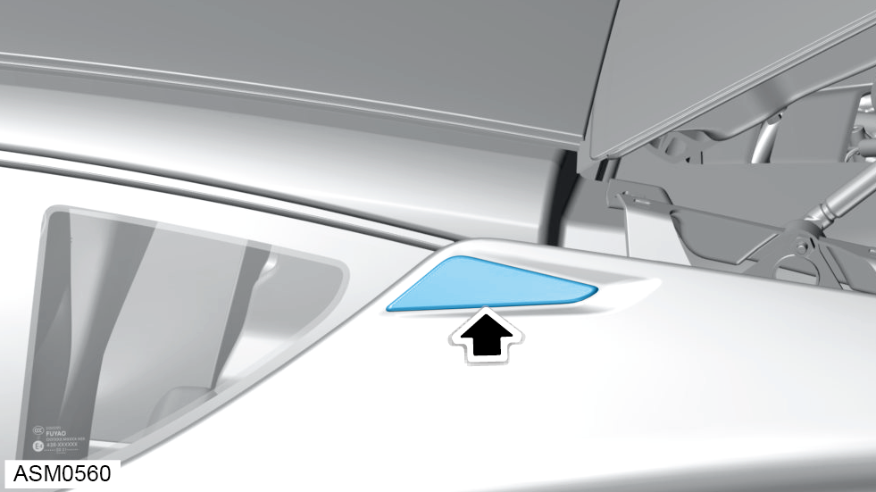

Badge - Rear Fender Fixing Cover
Print
Operation Code: 12.05.11-02
Removal

- Remove emblem secured to rear fender.
NOTE: The emblem is retained using adhesive strips.
Installation
- Installation is the reverse of removal procedure except for the following:
- Clean off excess adhesive from fender emblem area and renew adhesive.
- Check emblem gap and flush tolerances.